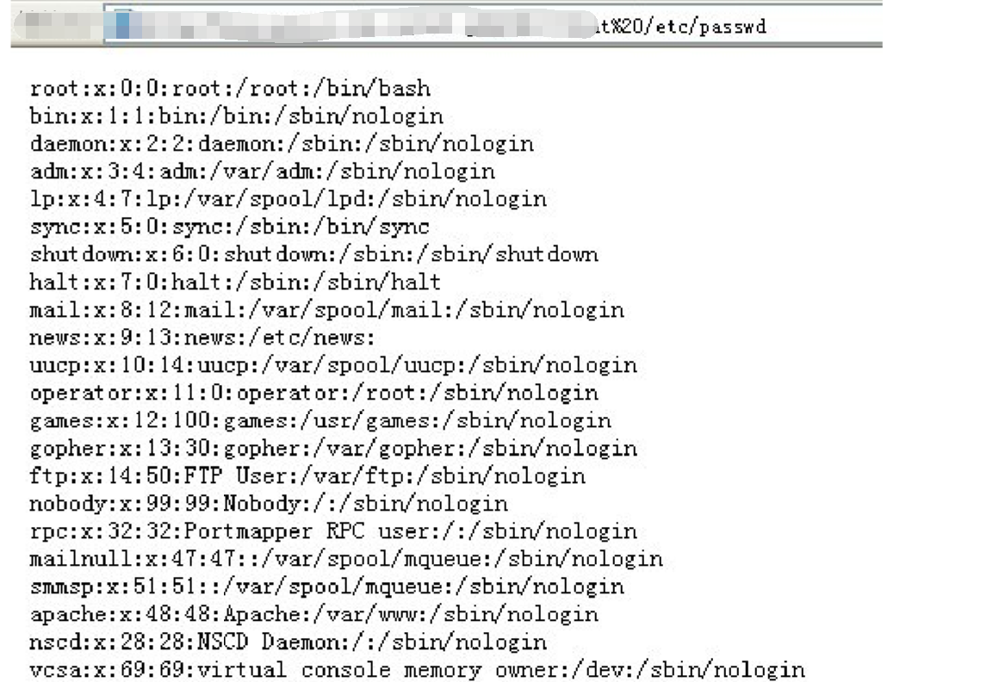
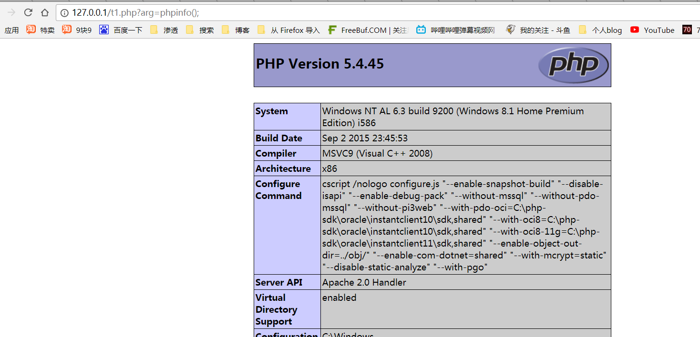

0x01 针对php的安全性
当php的register_globals配置选项打开的时候，复杂的原始表单处理不复存在，公用变量会自动建立。他会让php编程变得容易和方便，但同时也带来了安全隐患。
0x02 命令注入函数
常见的五个函数来执行外部应用程序或函数
system exec passthru shell_exec ``运算符
string system(string command, int &return_var)
command 要执行的命令 return_var 存放执行命令的执行后的状态值
string exec (string command, array &output, int &return_var)
command 要执行的命令 output 获得执行命令输出的每一行字符串 return_var 存放执行命令后的状态值 void
passthru (string command, int &return_var)、
command 要执行的命令 return_var 存放执行命令后的状态值
string shell_exec (string command)
command 要执行的命令
system:system函数可以用来执行一个外部的应用程序并将相应的执行结果输出
构造代码
这时候提交cmd=| cat /etc/passwd

exec:exec函数可以用来执行一个外部的应用程序
构造代码
0x03 eval注入攻击
eval 函数将输入的字符串参数当作 PHP 程序代码来执行
|
|
当我们提交arg=phpinfo();的时候

未完待续